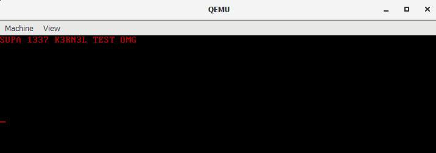

Bullying a C compiler in order to create PoC kernel without assembly.
Before I start rambling, I just want to clarify I have absolutely nothing against Zig or Zig programmers, this is all cheap humor, so please take it with a grain of salt.
So here's the thing, I recently got into a code-golfing beef with a bro about a peculiar topic.
Here's how the convo played out:
...
bro: so as an embedded dev I can say zig's better
bro: in everything
bro: for embedded systems
me: <dies from exposure to large dose of gamma-ziggiation>
me: >social credit -5000000
bro: huh
bro: well atleast I don't need multiple files to make an os lmfao
me: what sane person would want to write an OS using one source file..
bro: can you write a basic hello world OS in C in just one file of source code
me: yes
bro: aha
bro: show
bro: and in how many lines
bro: cuz zig can do it elegantly in 27 lines
me: i will
bro: eager to see it
me: 27 lines, i'd like to see this "elegance"
...
and this is when bro pasted the following piece of Zig code:
-------|----------------------------------------------------------------------------------------------------------------
1 | const builtin = @import("builtin");
2 | const MultiBoot = packed struct {
3 | magic: i32,
4 | flags: i32,
5 | checksum: i32,
6 | };
7 |
8 | const ALIGN = 1 << 0;
9 | const MEMINFO = 1 << 1;
10 | const MAGIC = 0x1BADB002;
11 | const FLAGS = ALIGN | MEMINFO;
12 |
13 | export var multiboot align(4) linksection(".multiboot") = MultiBoot{
14 | .magic = MAGIC,
15 | .flags = FLAGS,
16 | .checksum = -(MAGIC + FLAGS),
17 | };
18 |
19 | export var stack_bytes: [16 * 1024]u8 align(16) linksection(".bss") = undefined;
20 | const stack_bytes_slice = stack_bytes[0..];
21 |
22 | export fn _start() callconv(.Naked) noreturn {
23 | @call(.{ .stack = stack_bytes_slice }, kmain, .{});
24 |
25 | while (true) {}
26 | }
27 |
28 | pub fn panic(msg: []const u8, error_return_trace: ?*builtin.StackTrace) noreturn {
29 | @setCold(true);
30 | while (true) {}
31 | }
32 |
33 | fn kmain() void {
34 | }
-------|----------------------------------------------------------------------------------------------------------------
as a true whacked-over-the-head C supremacist, the syntax immediately burned my eyes and i couldn't really make sense of some parts of the code,
specifically the function headers of `_start` and `panic`.
it especially didn't help that i couldn't look at the disassembly, because this piece of zig refused to compile, even though it's just some copy-pasta
anyways.... to skip the point that bro was attempting to make:
...
bro: `@call(.{ .stack = stack_bytes_slice }, kmain, .{});` <----
bro: \> can you even do that in C? |
bro: C uses default stack by default |
bro: this. do this in C ----------------------------------------
...
so as you can imagine, i was not having this ziggler uprising and i started to speculate how tf was i gonna do this in C.
quick googling got me to
stackoverflow, which shat on me even more:
C code requires for example a stack to be setup, so if nothing else you need to set the stack pointer before you enter the first level of code.
And from C (not counting inline asm which in this case would be assembly not C) you cant set the stack pointer.
So you have that chicken and egg problem.
realizing i'm all alone in this battle, i started with the idea of rewriting Bruce's C Compiler
to introduce new keywords, to which i got the following response from bro:
...
bro: I don't want a codebase I want a few lines of code
bro: I want something like this without assembly and not a f!#*king 20 line turd <again referring to the same line of code>
bro: whatever it is you're not doing it in one line bro
bro: or two
bro: or three
bro: so cope
as you can imagine, i was ready to pop this little dipshmuck one, so he'd be busy examining the diff file of the number of teeth he spits out and swallows. jk, there's love everywhere.
but then i started 50iq brainstorming real hard, even though my hands were shaking from rage. after all, C supremacy was in danger and i was the dirt shield in the first line of defense.
at first, i was gonna just blatantly write the following array of bytes:
unsigned char esp[] = { 0xBC, 0x10, 0x00, 0x10, 0x00 }; // i.e. mov esp, 0x100010
but even i can admit that's just cheating and is basically the same as using inline assembly.
i started thinking about ways to abuse the C compiler, but i was stuck in the Garden of C-den and the realm surely posed some limitations. i somehow needed to modify the SP register.
so what is the key to the hole of "when does the compiler do this"? you're right, stack-based local variables!!!
immediately after this holy revelation smacked my face, i fired up Bochs with VGA BIOS to see what the ESP register looks right upon landing on empty `kmain()`.
and the answer is 0x6f04. next, i did the same thing with QEMU with SeaBIOS, and to my surprise, it was the same value!
where did this come from? i don't give a damn! okay maybe i do, but that's a topic for future ramblings. all that matters is, that now i only need to create an array big enough to overflow the ESP register and make it land exactly at the address of our stack.
so after hardcore MIT math, to force the compiler to generate `sub esp, 0x...`, all i need to do is this:
volatile char _shift[0xFFF06CD0];
so i quickly fed GCC some args and prepared myself to see magic:
kernel.c:14:19: error: size of array `_shift` is too large
14 | unsigned char _shift[0xFFF06CD0];
|
well sheese, how about tcc?
kernel.c:14: error: invalid array size
well alr, third time's a clang.. !!!AND IT WORKED!!! see for yourself:
00000000 <start>:
0: b8 dc 6c f0 ff mov eax, 0xfff06cdc
5: 29 c4 sub esp, eax
here's the full code:
#define textsect __attribute__((section(".text")))
#define align(b) __attribute__((aligned(b)))
#define naked __attribute__((naked))
textsect align(4) int _multiboot_spec[3] = {
0x1BADB002, /* magic */
0x00, /* flags */
0xe4524ffe /* checksum */
};
void kmain(void);
void start(void) {
/*
* the ESP register is set to 0x6f04 when leaving SeaBIOS.
* by creating a local variable of 0xFFF06CD0 bytes in size,
* the compiler will subtract this size from the ESP register,
* causing a 32bit overflow, which will effectively set
* the stack pointer to 0x100228 - 8 bytes from the top of our stack.
*/
unsigned char _shift[0xFFF06CD0];
kmain();
while(1);
}
align(16) unsigned int stack[128] = {
[127] = 0xffffffff /* top of the stack - reserved 4 bytes */
};
void kmain(void) {
/* return from kmain back to start to test the stack */
return;
}
so yea, we've created a stack of 512 (-4 reserved) bytes in size. let's count on one hand the number of lines required for setting it up:
unsigned char _shift[0xFFF06CD0]; /* this is one */
align(16) unsigned int stack[128] = { [127] = 0xffffffff }; /* and this is two! */
and the lesson we learned? combust don't trust zigglers and their anti-c warfare.
so now, let's try to print some text in order to perform a fatality on this fool:
/**
@file: kernel.c
@source: https://github.com/XYN0N/cernel/blob/master/kernel_print.c
*/
#define textsect __attribute__((section(".text")))
#define align(b) __attribute__((aligned(b)))
#define naked __attribute__((naked))
textsect align(4) int _multiboot_spec[3] = {
0x1BADB002, /* magic */
0x00, /* flags */
0xe4524ffe /* checksum */
};
void kmain(void);
void clearscr(void);
void print(unsigned int line, char *msg, unsigned int len);
void start(void) {
volatile char _shift[0xFFF06CD0];
kmain();
while(1);
}
align(16) unsigned int stack[128] = {
[127] = 0xffffffff
};
/*
* clang throws a fit about "undefined reference to `memcpy'",
* even though we're `-ffreestanding` and `-nostdlib`, whatever..
*/
void memcpy(char *dest, const char *src, unsigned int len) {
for (unsigned int i = 0; i < len; i++) {
dest[i] = src[i];
}
}
void kmain(void) {
char msg[] = "SUPA 1337 K3RN3L TEST OMG";
clearscr();
print(0, msg, sizeof(msg));
return;
}
void clearscr(void) {
volatile char *vmem = (volatile char *) 0xb8000;
for (unsigned int i = 0; i < (80*25*2);) {
vmem[i++] = ' ';
vmem[i++] = 0x4;
}
}
void print(unsigned int line, char *msg, unsigned int len) {
volatile char *vmem = (volatile char *) 0xb8000;
unsigned int i = (line * 80 * 2);
while (0 != (*msg)) {
vmem[i++] = *(msg++);
vmem[i++] = 0x4;
}
}
$ qemu-system-i386 -kernel kernel -S -s &
$ gdb
gef> target remote localhost:1234
gef> b *0x100000
gef> c
gef> disass /r $eip, +16
Dump of assembler code from 0x100000 to 0x100010:
=> 0x00100000: b8 dc 6c f0 ff mov eax, 0xfff06cdc
0x00100005: 29 c4 sub esp, eax
0x00100007: e8 14 00 00 00 call 0x100020
0x0010000c: e9 fb ff ff ff jmp 0x10000c
gef> info reg eax esp
eax 0x2badb002 0x2badb002
esp 0x6f04
gef> b *0x00100007
Breakpoint 2 at 0x100007
gef> c
gef> disass /r $eip, +8
Dump of assembler code from 0x100007 to 0x10000f:
=> 0x00100007: e8 14 00 00 00 call 0x100020
0x0010000c: e9 fb ff ff ff jmp 0x10000c
End of assembler dump.
gef> info reg eax esp
eax 0xfff06cdc 0xfff06cdc
esp 0x100228 0x100228
gef> x/4xb $esp
0x100228: 0x00 0x00 0x00 0x00
gef> si
gef> x/4xb $esp
0x100224: 0x0c 0x00 0x10 0x00

and the result of this demo:
